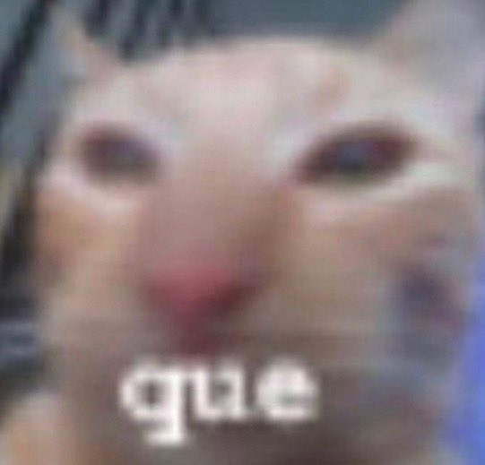

Jugadores:
- Usuario
- Usuario
- Usuario
- Usuario
- Usuario
Descripción:
NARRATOR:
(Black screen with text; The sound of buzzing bees can be heard)
According to all known laws
of aviation,
:
there is no way a bee
should be able to fly.
:
Its wings are too small to get
its fat little body off the ground.
:
The bee, of course, flies anyway
:
because bees don't care
what humans think is impossible.
BARRY BENSON:
(Barry is picking out a shirt)
Yellow, black. Yellow, black.
Yellow, black. Yellow, black.
:
Ooh, black and yellow!
Let's shake it up a little.
JANET BENSON:
Barry! Breakfast is ready!
BARRY:
Coming!
:
Hang on a second.
(Barry uses his antenna like a phone)
:
Hello?
link al sitio en el que se haga